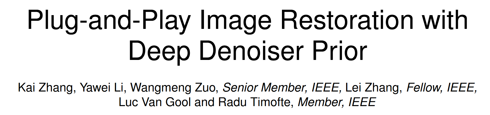
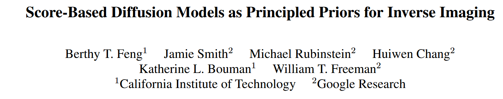
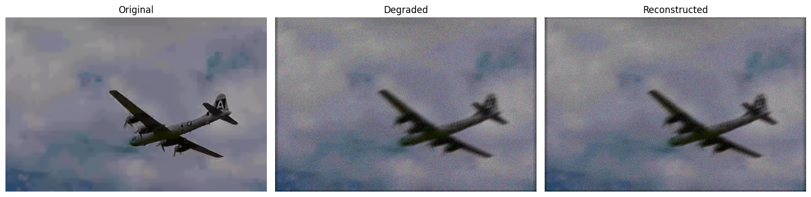
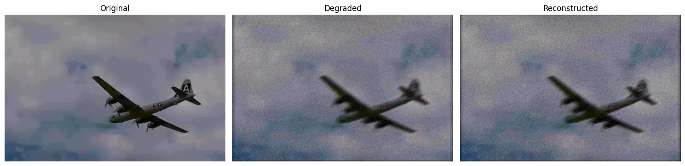

From Paper to Code: Understanding and Reproducing “Plug-and-Play Image Restoration with Deep Denoiser Prior”#
 Code: GitHub Repository, Source Code in My Repo: ../../../../code/PnP/DPIR-master/main_dpir_deblocking_color.py
Paper Reading Notes#
1. Highlights#
The authors proposed an independent deep denoising network that can be seamlessly plugged into traditional optimization loops. The network serves as a powerful prior for solving various inverse imaging problems via the Plug-and-Play framework.
2. Background#
Image restoration is a fundamental problem in computer vision and computational imaging. The goal is to recover a high-quality image \(\mathbf{x}\) from its degraded observation \(\mathbf{y}\), which may be blurred, noisy, downsampled, or compressed.
A standard Bayesian approach is to perform Maximum A Posteriori (MAP) estimation:
Assuming additive Gaussian noise, i.e.,
the likelihood becomes:
Taking the negative log of Equation (1) and substituting Equation (2) leads to the following optimization formulation:
Review: Maximum A Posteriori (MAP)#
Maximum a posteriori (MAP) estimation solves:
\(p(\mathbf{y} \mid \mathbf{x})\): likelihood (data consistency)
\(p(\mathbf{x})\): prior (natural image constraint)
🍵 Example: Guessing a Drink#
You are given a glass of unknown liquid \(\mathbf{y}\) and asked to guess what original drink \(\mathbf{x}\) it came from.
Likelihood: If \(\mathbf{x}\) were tea, would adding water or ice turn it into what you taste now?
Prior: Is \(\mathbf{x}\) a drink people normally make (e.g., tea, not soy sauce)?
MAP chooses the \(\mathbf{x}\) that both:
Could realistically lead to \(\mathbf{y}\) (via degradation)
Is itself likely to be a valid original (natural prior)
In this paper, the forward model \(T(x)\) is a deterministic function (like blurring, downsampling, etc). But in Bayesian inference, we always deal with uncertainty, so we represent the observation model probabilistically:
Even though \(T(x)\) is deterministic, the noise is random, so the output \(y\) becomes a random variable. That’s why we use likelihood functions \(p(y|x)\) — they describe the probability distribution of observed data given the true signal \(x\).
So:
Forward model = deterministic process
Likelihood = probabilistic model of observations, accounting for noise
Authors use \(p(y|x)\) because it naturally connects optimization with probability theory, and allows us to apply Bayesian tools like MAP, variational inference, or even sampling (in generative models).
3. Method Overview#
The Plug-and-Play (PnP) framework, first proposed by Venkatakrishnan et al. [1], makes a simple but powerful observation: instead of specifying an explicit prior \(\mathcal{R}(\mathbf{x})\), we can plug in a denoiser as a black-box prior. In essence: 
Replace the proximal operator of the prior term with a denoising function.
This enables using modern CNN-based denoisers, such as DnCNN or DRUNet, which are trained on clean/noisy image pairs, as implicit priors.
The optimization problem becomes decoupled into two subproblems:
Data fidelity step:
Denoising step (Prior step):
This is the core of the Half-Quadratic Splitting (HQS) formulation. Here, \(k\) denotes the iteration index of the optimization process. In PnP, the second step is not solved explicitly; rather, we perform:
References#
[1] Venkatakrishnan, S. V., Bouman, C. A., & Wohlberg, B. (2013). Plug-and-play priors for model based reconstruction. GlobalSIP.
[2] Zhang, K., Zuo, W., & Zhang, L. (2017). Beyond a Gaussian denoiser: Residual learning of deep CNN for image denoising. TIP.
[3] Zhang, K., Zuo, W., Gu, S., & Zhang, L. (2021). Plug-and-Play Image Restoration with Deep Denoiser Prior. TPAMI.
[4] Romano, Y., Elad, M., & Milanfar, P. (2017). The little engine that could: Regularization by denoising (RED). SIAM Imaging Sciences.
Code with Explanation: PnP-HQS test on an image#
I implemented the PyTorch version myself and found that PnP is sensitive to hyperparameters such as noise_stddev and num_steps.
import os
import sys
print("Current working directory:", os.getcwd())
target_path = os.path.abspath(os.path.join(os.getcwd(), "../../../code/PnP/DPIR-master/"))
print("Appending path:", target_path)
sys.path.insert(0, target_path)
import torch
from torch.utils.data import Dataset
from torchvision import transforms
from PIL import Image
from tqdm import tqdm
import dppp # Your custom module (should include blur, psnr, lpips_alex, hqs_super_resolve, etc.)
import matplotlib.pyplot as plt
# Automatically select device
# device = torch.device("cuda:1" if torch.cuda.is_available() else "cpu")
device = 'cpu'
print("Using device:", device)
# Dataset class to load images from a folder
class ImageFolderDataset(Dataset):
def __init__(self, root_dir):
self.image_paths = sorted([
os.path.join(root_dir, fname)
for fname in os.listdir(root_dir)
if fname.lower().endswith((".png", ".jpg", ".jpeg", ".bmp"))
])
self.transform = transforms.ToTensor()
def __len__(self):
return len(self.image_paths)
def __getitem__(self, idx):
img = Image.open(self.image_paths[idx]).convert("RGB")
return self.transform(img)
# Smart image display function
def smart_imshow(tensor, title=None):
if isinstance(tensor, torch.Tensor):
tensor = tensor.detach().cpu()
if tensor.dim() == 3:
if tensor.shape[0] in [1, 3]: # [C, H, W]
tensor = tensor.permute(1, 2, 0).numpy()
else: # Already in [H, W, C]
tensor = tensor.numpy()
elif tensor.dim() == 2:
tensor = tensor.numpy()
if tensor.ndim == 2 or (tensor.ndim == 3 and tensor.shape[2] == 1):
plt.imshow(tensor.squeeze(), cmap='gray')
else:
plt.imshow(tensor)
if title:
plt.title(title)
plt.axis("off")
# Path to image dataset
data_root = "../../../Datasets/CBSD68/original"
dataset = ImageFolderDataset(data_root)
# Load one image and move it to device
image = dataset[0].unsqueeze(0).to(device) # Shape: [1, 3, H, W]
# Prepare a blur kernel
kernel = dppp.conv2D_filter_rgb(dppp.NB_DEBLURRING_LEVIN_KERNELS[0]).to(torch.float32).to(device)
# Simulate degraded image (blur + Gaussian noise)
noise_stddev = 0.04
degraded = dppp.blur(image, kernel, noise_stddev=noise_stddev)
# Load denoiser model (ensure it runs on the same device)
denoiser = dppp.load_denoiser(device=device)
# Deconvolution via HQS (Plug-and-Play image restoration)
reconstructed = dppp.hqs_super_resolve(
degraded=degraded,
image=image,
sr_factor=1,
denoiser=denoiser,
max_denoiser_stddev=0.2,
kernel=None, # Set to None to use iterative solver
callbacks=[], # Optional hooks for visualization or logging
)
Current working directory: /home/xqgao/2025/MIT/Awesome-Computational-Imaging/chapters/Chapter13_PlugAndPlay
Appending path: /home/xqgao/2025/MIT/code/PnP/DPIR-master
Using device: cpu
/home/xqgao/2025/MIT/Awesome-Computational-Imaging/chapters/Chapter13_PlugAndPlay/dppp.py:333: FutureWarning: You are using `torch.load` with `weights_only=False` (the current default value), which uses the default pickle module implicitly. It is possible to construct malicious pickle data which will execute arbitrary code during unpickling (See https://github.com/pytorch/pytorch/blob/main/SECURITY.md#untrusted-models for more details). In a future release, the default value for `weights_only` will be flipped to `True`. This limits the functions that could be executed during unpickling. Arbitrary objects will no longer be allowed to be loaded via this mode unless they are explicitly allowlisted by the user via `torch.serialization.add_safe_globals`. We recommend you start setting `weights_only=True` for any use case where you don't have full control of the loaded file. Please open an issue on GitHub for any issues related to this experimental feature.
model.load_state_dict(torch.load(path_to_model), strict=True)
Iterative
HQS steps: 8%|▊ | 5/60 [00:03<00:35, 1.56it/s]
Setting up [LPIPS] perceptual loss: trunk [alex], v[0.1], spatial [off]
/home/xqgao/anaconda3/envs/inr/lib/python3.12/site-packages/torchvision/models/_utils.py:208: UserWarning: The parameter 'pretrained' is deprecated since 0.13 and may be removed in the future, please use 'weights' instead.
warnings.warn(
/home/xqgao/anaconda3/envs/inr/lib/python3.12/site-packages/torchvision/models/_utils.py:223: UserWarning: Arguments other than a weight enum or `None` for 'weights' are deprecated since 0.13 and may be removed in the future. The current behavior is equivalent to passing `weights=AlexNet_Weights.IMAGENET1K_V1`. You can also use `weights=AlexNet_Weights.DEFAULT` to get the most up-to-date weights.
warnings.warn(msg)
Loading model from: /home/xqgao/anaconda3/envs/inr/lib/python3.12/site-packages/lpips/weights/v0.1/alex.pth
PSNR: 28.38, LPIPS: 0.2047
/home/xqgao/anaconda3/envs/inr/lib/python3.12/site-packages/lpips/lpips.py:107: FutureWarning: You are using `torch.load` with `weights_only=False` (the current default value), which uses the default pickle module implicitly. It is possible to construct malicious pickle data which will execute arbitrary code during unpickling (See https://github.com/pytorch/pytorch/blob/main/SECURITY.md#untrusted-models for more details). In a future release, the default value for `weights_only` will be flipped to `True`. This limits the functions that could be executed during unpickling. Arbitrary objects will no longer be allowed to be loaded via this mode unless they are explicitly allowlisted by the user via `torch.serialization.add_safe_globals`. We recommend you start setting `weights_only=True` for any use case where you don't have full control of the loaded file. Please open an issue on GitHub for any issues related to this experimental feature.
self.load_state_dict(torch.load(model_path, map_location='cpu'), strict=False)
HQS steps: 18%|█▊ | 11/60 [00:08<00:34, 1.44it/s]
PSNR: 28.51, LPIPS: 0.1910
HQS steps: 28%|██▊ | 17/60 [00:12<00:26, 1.64it/s]
PSNR: 28.61, LPIPS: 0.1774
HQS steps: 38%|███▊ | 23/60 [00:16<00:22, 1.63it/s]
PSNR: 28.67, LPIPS: 0.1594
HQS steps: 48%|████▊ | 29/60 [00:20<00:19, 1.60it/s]
PSNR: 27.68, LPIPS: 0.3446
HQS steps: 58%|█████▊ | 35/60 [00:24<00:16, 1.55it/s]
PSNR: 26.43, LPIPS: 0.5014
HQS steps: 68%|██████▊ | 41/60 [00:28<00:12, 1.52it/s]
PSNR: 25.83, LPIPS: 0.5609

HQS steps: 78%|███████▊ | 47/60 [00:32<00:07, 1.63it/s]
PSNR: 25.58, LPIPS: 0.5828
HQS steps: 88%|████████▊ | 53/60 [00:36<00:04, 1.56it/s]
PSNR: 25.43, LPIPS: 0.5941
HQS steps: 98%|█████████▊| 59/60 [00:40<00:00, 1.63it/s]
PSNR: 25.38, LPIPS: 0.5968

HQS steps: 100%|██████████| 60/60 [00:41<00:00, 1.45it/s]
Explanation of hqs_super_resolve function#
This function implements a Plug-and-Play (PnP) super-resolution algorithm based on the Half-Quadratic Splitting (HQS) framework. The optimization problem is split into two sub-problems that are solved alternately in an iterative manner.
We aim to solve the following HQS formulation:
# Data consistency step
x = data_solution(x, rhos[step])
Denoising step (Prior step):
This is the core of the Half-Quadratic Splitting (HQS) formulation. Here, \(k\) denotes the iteration index of the optimization process. In PnP, the second step is not solved explicitly; rather, we perform:
# Denoising step (Plug-and-Play prior)
sigma_map = torch.full((B, 1, H, W), sigmas[step], dtype=x.dtype, device=x.device)
x_input = torch.cat([x, sigma_map], dim=1)
x = denoiser(x_input)
Data consistency step, the first solution: _data_solution_iterative#
This function approximates the solution to Eq. (4a) using iterative back-projection:
def _data_solution_iterative(
x, alpha, degraded, resize_fn, scale_factor, num_steps=30, step_size=1.5, mode='bicubic'
):
for _ in range(num_steps):
# Downsample
if resize_fn is not None:
x_down = resize_fn(x, scale_factor, upsample=False)
else:
B, C, H, W = x.shape
h, w = H // scale_factor, W // scale_factor
x_down = F.interpolate(x, size=(h, w), mode=mode, align_corners=False)
# Residual
data_err = degraded - x_down
# Upsample
if resize_fn is not None:
data_err_up = resize_fn(data_err, scale_factor, upsample=True)
else:
B, C, H, W = x.shape
data_err_up = F.interpolate(data_err, size=(H, W), mode=mode, align_corners=False)
# Update
x = x + step_size * data_err_up
return x
This method is simple and generic, relying on forward and backward projections using bicubic interpolation or a custom resize function.
Data consistency step, the second solution: _data_solution_closed_form#
When a known degradation kernel is available, the following closed-form solution in the Fourier domain is used:
def _data_solution_closed_form(x, alpha, FB, FBC, F2B, FBFy, scale_factor):
alpha_complex = torch.tensor(alpha, dtype=torch.complex64, device=x.device)
x_cf = x # shape [B, C, H, W]
FR = FBFy + _rfft2d(alpha * x_cf)
B, C, H, W = x_cf.shape
FBR = _splits(FB * FR, scale_factor, W).mean(dim=-1)
invW = _splits(F2B, scale_factor, W).mean(dim=-1)
invWBR = FBR / (invW + alpha_complex)
invWBR_tiled = torch.tile(invWBR, (1, 1, scale_factor, scale_factor))[..., :FBC.shape[-1]]
FCBinvWBR = FBC * invWBR_tiled
FX = (FR - FCBinvWBR) / alpha_complex
x_est = _irfft2d(FX, like=x_cf)
return x_est
This method uses efficient convolution via the FFT to solve the data term in one shot, which is significantly faster when the degradation model is known.
Denoising step#
Instead of solving the prior optimization problem explicitly, we define:
sigma_map = torch.full((B, 1, H, W), sigmas[step], dtype=x.dtype, device=x.device)
x_input = torch.cat([x, sigma_map], dim=1)
x = denoiser(x_input)
This corresponds to Eq. (5), where the denoiser is conditioned on the current noise level \(\sigma_k\).